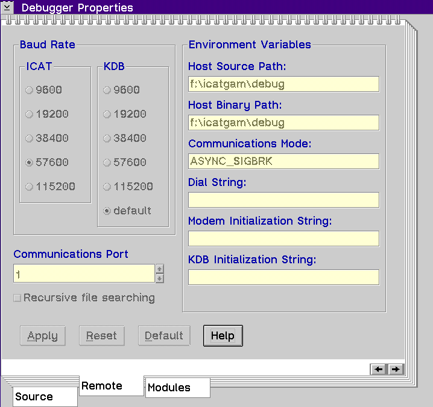
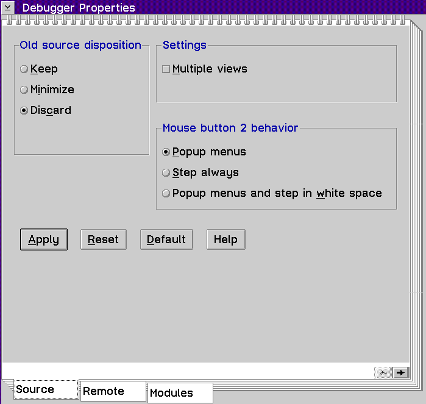
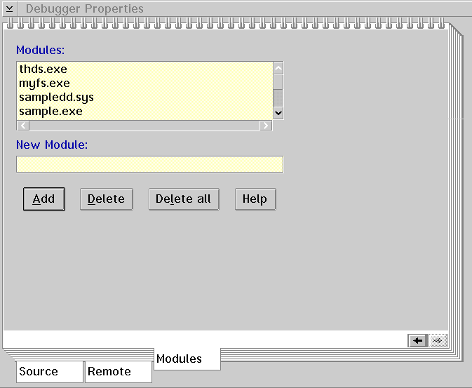

Displays the Debugger Properties window, which allows you to select how the threads and source files initially display. This window contains the following three tabs:
The Remote page displays by default if you open the window using the Initialization window. If not, the Source page displays.
When you select the Remote tab, the following page displays:

Use this window to do the following tasks:
ICAT Baud Rate Group Heading
This group of radio buttons allows you to select communication baud rates from 9600 to 115200. Ensure that your machine can handle rates greater than 19200 if you choose them. You must have buffered UARTs on both machines in this case. If you choose a rate of 115200, your host machine must have a COM.SYS different than the default supplied with OS/2.
KDB Baud Rate Group Heading
This group of radio buttons allows you to select the initial (setup) communication rate that the debugger uses to communicate with KDB. If any rate other than default is selected, that same rate will be used to reset the victim machine's communication port when the debugger is exited.
Communications Port Spin Button
This spin button allows you to select the communication port number for the debugger on the host machine.
Environment Variables Group Heading
These entry fields correspond respectively to the following environment variables:
By adjusting these fields, you can alter your communication and serial paths dynamically before communication is established with the victim machine. See Setting Environment Variables for detailed information on environment variables.
Path Recursion Check Box
This check box, when selected, forces the debugger to search all source and binary path subdirectories recursively.
When you select the Source tab, the following page displays:

Use this window to determine:
Old source disposition Group Heading
In the course of debugging, these selections allow you to control the behavior of source windows from which execution has just left. The Old Source Disposition radio buttons control the behavior of source windows within a thread.
The dispositions that the views can take are:
Keep
Settings Group Heading
You can choose to display more than one source window for a particular source file. Enable the Multiple views check box if you want to have multiple source windows open at the same time.
Mouse button 2 behavior Group Heading
Select the radio button that represents the action that you want mouse button 2 to perform.
When you select the Modules tab, the following page displays:

Use this window to add a module name to or delete a module name from the CAT_MODULE_LIST environment variable. See Setting Environment Variables for detailed information on this environment variable.
Modules List Box
This contains a list of modules which the debugger obtains information about if or when they are loaded. If a module is loaded and it is not in the list, the debugger ignores the module.
New Module Entry Field
Type the name of the module that you want to add or delete. Select the appropriate push button to perform this task.